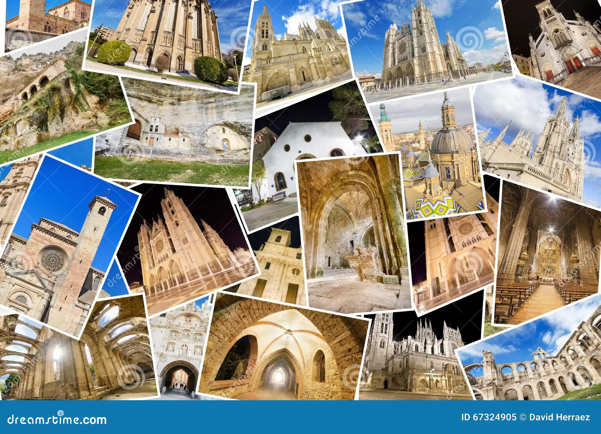

POPULAR TEMPLES
Mark twain have remarked rightly about India that, other countries are paupers when it comes to religion. But India is a millionaire. We Indians have a rich legacy left behind by our ancestors in every field. This history have given India so many places of temples and pilgrimage too. All ye rulers who ruled India have certainly given many monuments for which India is so famous today. Also, different dynasties showed different form of craftsmanship in the monuments constructed by them. This makes all of them unique.
I am listing down a few Famous Temples in India who attract a large number of both Indian and International tourists around the year or during certain months.
1. Tirupati Balaji Temple is in Tirumala, Andhra Pradesh. It is a temple dedicated to an incarnation of Lord Vishnu. It is the second richest religious site in India as all the devotees offer money and gold to the temples.

2. Meenakshi Temple Madurai is dedicated to Parvati and Shiva. Madurai is the biggest city in India. The custom of taking a dip in the golden lotus tank which was originally a pond built by Lord Shiva is considered auspicious before entering the main shrine. The hall contains 985 pillars.

3. Brihadeshwara Temple is situated in Thanjavur city. It was built by the Chola kings in the 11th century. It is a Shiva temple made of granite on the principles of Vastushashtra. It’s speciality is that it casts no shadows on the ground at noon time.

4. Badrinath temple is situated close to The Alakananda River in the Chamoli District in Uttarakhand . It is one of the Divya desams which means temples dedicated to Lord Vishnu. The visiting months are between Aprils to November.

5. Kedarnath Temple is situated at the Garhwal Range of Himalayan region. It is situated in Uttarakhand. It is one of the most sacred temples dedicated to lord Shiva by the Pandavas. They built this temple to atone their sins committed in the battle of Kurukshetra. This temple was later on restored by Adi Sankaracharya . This temple is situated at the high altitude of 3583 metres. This temple is open only during a few months and the rest of the year is close because of severe cold.It’s Famous Temple in India.
6. Vaishno Devi Mandir is situated 12 kms away from Katra after which a cave is reached. This cave temple is situated at 5200 ft in a mountain calledTrikuta in Jammu and Kashmir.The idols are in the form of three rock heads called Pindies.

7. Golden Temple or Harmandir Sahib is open to any person built on the philosophy of universal brotherhood. It is made at an altitude lower than ground level as a sign of humility. It is a major attaction in Punjab and all devotees donate a lot of money to the temple every day.

6. Sanchi Stupa is a buddhist temple situated in Sanchi, a village in Raisen District of Madhya Pradesh. This village contains other buddhist temples too which were built in between 3rd century B.C to 12th century A.D. This is dome shaped with four gateways called Toranas and yhese four gateways symbolises love, peace, courage and trust.